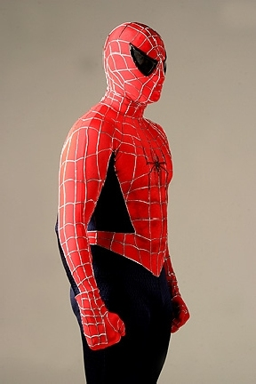

Around this time Spiderman took his place among the Avengers. Spider-Man usually works on his own; however, when he joined the Avengers he began working for Tony Stark. Eventually, he would wear the Iron Spider suit made by Tony when the war broke out.
To stay away from spoilers, there was an incident where a superhero was killed in battle which will remain nameless, holding Tony Stark responsible he quickly went into hiding where he was found by the punisher that brought him to Captain America.